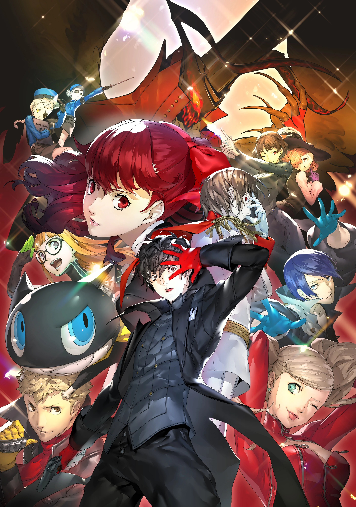
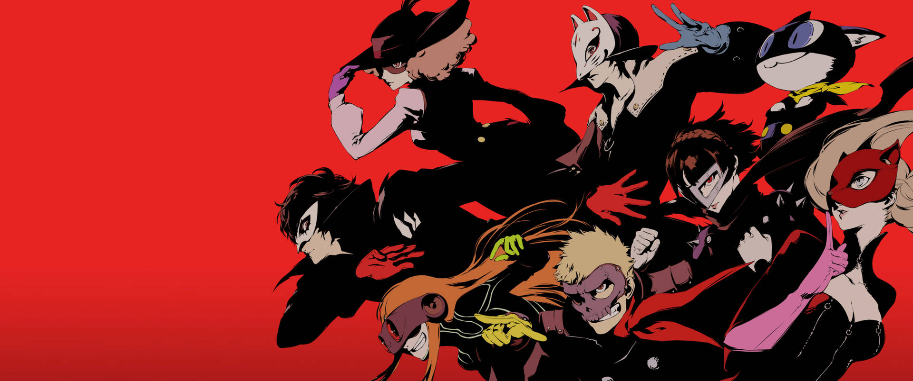
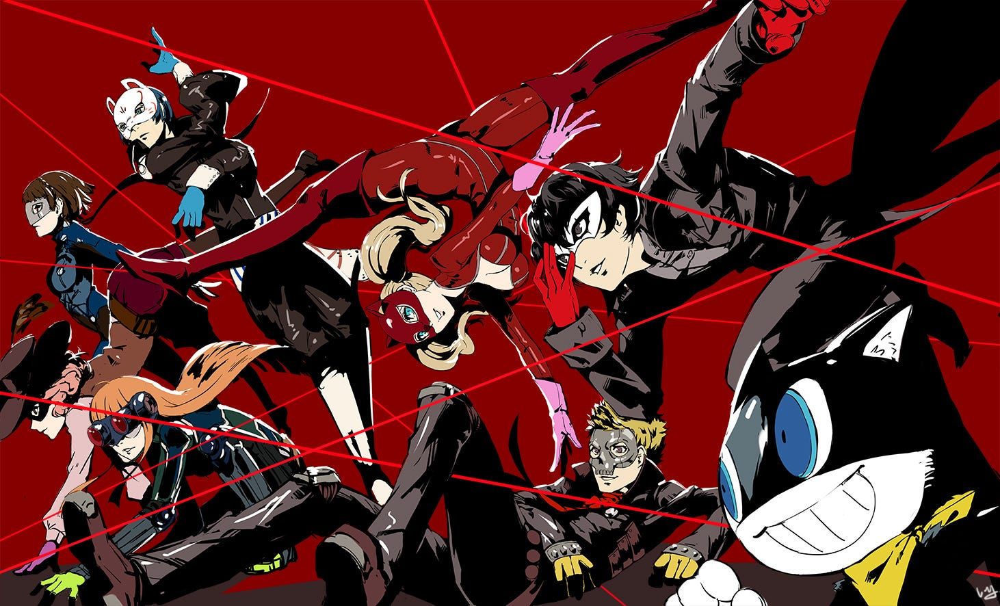

I'm a shape-shifter at Poe's masquerade
Hiding both face and mind All free for you to draw
I'm a shape-shifter, what else should I be?
Please don't take off my mask Revealing dark
Hiding both face and mind All free for you to draw
I'm a shape-shifter, what else should I be?
Please don't take off my mask Revealing dark
Where have you been? Been searching all along Came facing twilight on and on Without a clue, without a
sign Without grasping at the real question to be asked Where have I been?



Moments of calm Nothing left to be found A mirror right in front of me That's where I find An empty
glass Reflecting the sad truth It's telling words not to be told I need the mask
I'm a shape-shifter at Poe's masquerade Hiding both face and mind, all free for you to draw I'm a
shape-shifter chained down to my core Please don't take off my mask, my place to hide
Beneath The Mask -King Side By FamilyJules

I'm a shape-shifter at Poe's masquerade Hiding both face and mind, all free for you to draw I'm a
shape-shifter, have no face to show Please don't take off my mask, my disguise

I can't tell you How to see me
Just a cage of bones
There's nothing inside
Will it unleash me?
Burning down the walls
Is there a way for me to break?
Just a cage of bones
There's nothing inside
Will it unleash me?
Burning down the walls
Is there a way for me to break?

Explantion: This song is origionaly from Persona 5 and was covered by FamilyJules with help from
AceofHearts on King of Hearts and Adriana Figueroa on Queen of Hearts